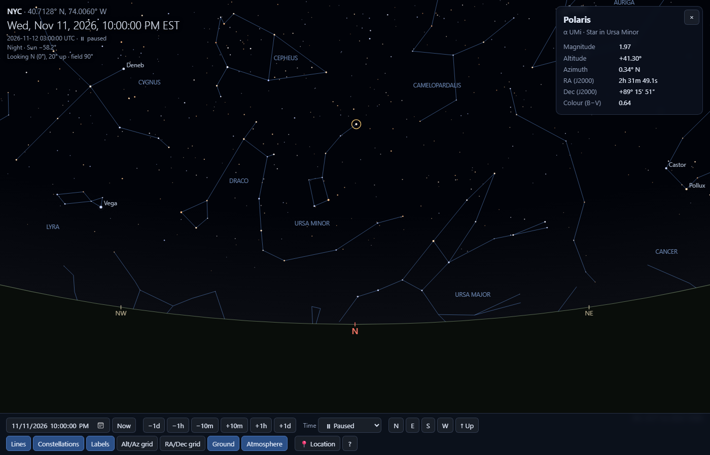
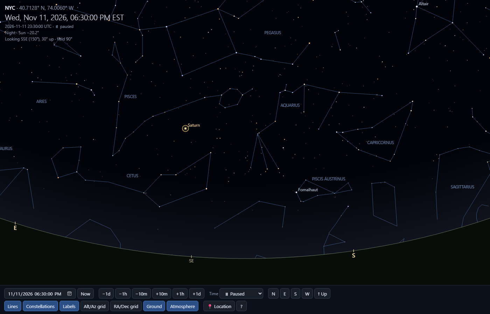
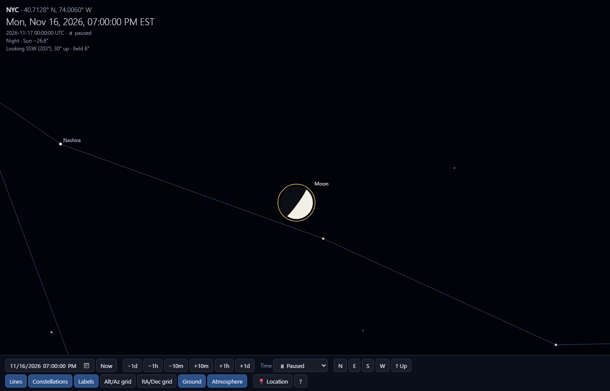
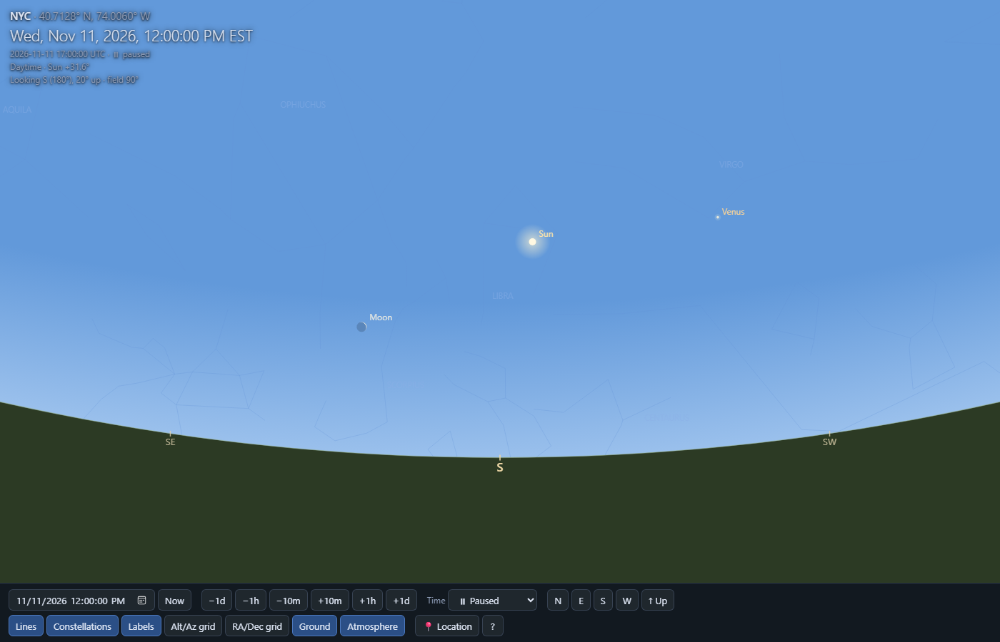
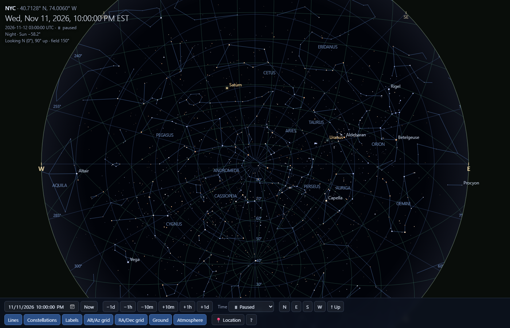
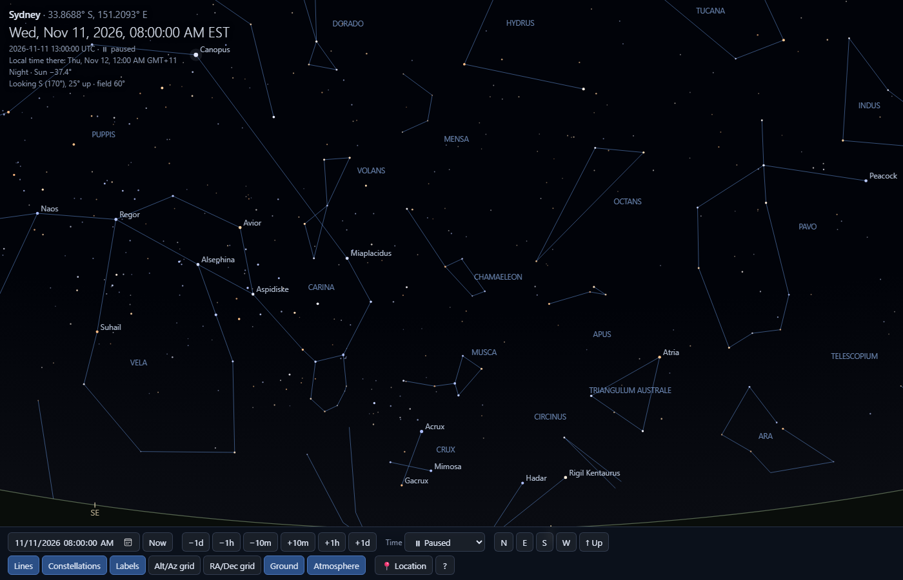

<title>Sky Viewer Build Report</title>
<meta name="claude:viewport-fit-sides" content="cover">
<link rel="preconnect" href="https://fonts.googleapis.com">
<link rel="preconnect" href="https://fonts.gstatic.com" crossorigin>
<link rel="stylesheet" href="https://fonts.googleapis.com/css2?family=Bricolage+Grotesque:opsz,wght@12..96,500;12..96,700&family=Instrument+Sans:wght@400;500;600&family=JetBrains+Mono:wght@400;500&display=swap">
<style>
/* Layout: a single reading column with one full-bleed all-sky star chart as the hero; data sections below in tables and bars. */
:root {
  --bg: #eef1f5;
  --surface: #ffffff;
  --fg: #172235;
  --muted: #5b6a80;
  --rule: #d5dce6;
  --accent: #a8641a;          /* star gold, darkened for light paper */
  --good: #2f7d4f;
  --sky: #0a1222;             /* the chart is a piece of night sky in both themes */
  --sky-grid: rgba(140, 170, 220, 0.16);
  --sky-label: #9fb3d4;
  --sky-ecliptic: rgba(231, 183, 95, 0.55);
  --font-display: "Bricolage Grotesque", "Segoe UI", system-ui, sans-serif;
  --font-body: "Instrument Sans", "Segoe UI", system-ui, sans-serif;
  --font-mono: "JetBrains Mono", ui-monospace, "Cascadia Mono", Consolas, monospace;
}
@media (prefers-color-scheme: dark) {
  :root:not([data-theme="light"]) {
    --bg: #0d1424; --surface: #131c30; --fg: #dbe3f0; --muted: #8e9db6; --rule: #25314a;
    --accent: #e7b75f; --good: #6cc391; color-scheme: dark;
  }
}
:root[data-theme="dark"] {
  --bg: #0d1424; --surface: #131c30; --fg: #dbe3f0; --muted: #8e9db6; --rule: #25314a;
  --accent: #e7b75f; --good: #6cc391; color-scheme: dark;
}

* { box-sizing: border-box; }
body {
  background: var(--bg); color: var(--fg);
  font: 16px/1.6 var(--font-body);
  padding-left: max(16px, env(safe-area-inset-left, 0px));
  padding-right: max(16px, env(safe-area-inset-right, 0px));
  padding-block: 32px 64px;
}
main { max-width: 960px; margin: 0 auto; display: flex; flex-direction: column; gap: 56px; }
h1, h2, h3 { font-family: var(--font-display); text-wrap: balance; margin: 0; line-height: 1.15; }
h1 { font-size: clamp(2.2rem, 6vw, 3.4rem); font-weight: 700; letter-spacing: -0.02em; }
h2 { font-size: 1.55rem; font-weight: 700; }
h3 { font-size: 1.05rem; font-weight: 600; font-family: var(--font-body); }
p { margin: 0; max-width: 65ch; }
.eyebrow { font: 500 0.75rem/1 var(--font-mono); letter-spacing: 0.12em; text-transform: uppercase; color: var(--accent); }
.muted { color: var(--muted); }
code, .mono { font-family: var(--font-mono); font-size: 0.86em; }
section { display: flex; flex-direction: column; gap: 18px; }
section > header { display: flex; flex-direction: column; gap: 6px; }

/* hero */
.hero { display: flex; flex-direction: column; gap: 14px; }
.hero p.lede { font-size: 1.12rem; color: var(--muted); }
.chart-wrap { background: var(--sky); border-radius: 14px; padding: 14px; display: flex; flex-direction: column; gap: 8px; }
#sky { width: 100%; aspect-ratio: 2 / 1; max-width: 100%; display: block; }
.chart-cap { font: 0.78rem/1.4 var(--font-mono); color: var(--sky-label); display: flex; flex-wrap: wrap; gap: 6px 18px; justify-content: space-between; }
.chart-cap .ecl { color: var(--accent); }

/* demo video */
.video-wrap { background: var(--sky); border-radius: 14px; padding: 10px; }
.video-wrap video { display: block; width: 100%; max-width: 100%; aspect-ratio: 16 / 9; border-radius: 8px; background: var(--sky); }
.small-note { font-size: 0.86rem; }
.small-note a { color: var(--accent); }

/* stats */
.stats { display: grid; grid-template-columns: repeat(auto-fit, minmax(140px, 1fr)); gap: 1px; background: var(--rule); border: 1px solid var(--rule); border-radius: 12px; overflow: hidden; }
.stat { background: var(--surface); padding: 16px 18px; display: flex; flex-direction: column; gap: 2px; }
.stat b { font: 700 1.7rem/1.1 var(--font-display); font-variant-numeric: tabular-nums; }
.stat span { font-size: 0.82rem; color: var(--muted); }
.stat.ok b { color: var(--good); }

/* tables */
.table-scroll { overflow-x: auto; border: 1px solid var(--rule); border-radius: 12px; background: var(--surface); }
table { border-collapse: collapse; width: 100%; font-size: 0.9rem; }
th, td { text-align: left; padding: 9px 14px; border-bottom: 1px solid var(--rule); vertical-align: top; }
tr:last-child td { border-bottom: 0; }
th { font: 500 0.72rem/1.2 var(--font-mono); letter-spacing: 0.08em; text-transform: uppercase; color: var(--muted); background: var(--bg); }
td.num { font-family: var(--font-mono); font-variant-numeric: tabular-nums; white-space: nowrap; }
.pill { display: inline-block; font: 500 0.72rem/1 var(--font-mono); padding: 4px 8px; border-radius: 999px; color: var(--good); border: 1px solid currentColor; white-space: nowrap; }

/* histogram */
.hist { display: grid; grid-template-columns: auto 1fr auto; gap: 8px 14px; align-items: center; font-size: 0.88rem; }
.hist .lbl { font-family: var(--font-mono); color: var(--muted); white-space: nowrap; }
.hist .track { height: 18px; background: var(--bg); border-radius: 4px; overflow: hidden; border: 1px solid var(--rule); }
.hist .bar { height: 100%; background: var(--accent); border-radius: 3px 0 0 3px; min-width: 2px; }
.hist .val { font-family: var(--font-mono); font-variant-numeric: tabular-nums; text-align: right; }

/* gallery */
.gallery { display: grid; grid-template-columns: repeat(auto-fill, minmax(280px, 1fr)); gap: 20px; }
figure { margin: 0; display: flex; flex-direction: column; gap: 8px; min-width: 0; }
figure img { width: 100%; max-width: 100%; aspect-ratio: 14 / 9; object-fit: cover; border-radius: 10px; border: 1px solid var(--rule); display: block; background: var(--sky); }
figcaption { font-size: 0.86rem; color: var(--muted); }
figcaption b { color: var(--fg); font-weight: 600; display: block; }

/* pipeline */
.pipeline { list-style: none; margin: 0; padding: 0; display: flex; flex-wrap: wrap; gap: 8px; align-items: stretch; counter-reset: step; }
.pipeline li { flex: 1 1 150px; min-width: 0; background: var(--surface); border: 1px solid var(--rule); border-radius: 10px; padding: 12px 14px; display: flex; flex-direction: column; gap: 4px; counter-increment: step; }
.pipeline li::before { content: counter(step); font: 500 0.72rem/1 var(--font-mono); color: var(--accent); }
.pipeline b { font-size: 0.92rem; }
.pipeline span { font-size: 0.8rem; color: var(--muted); }

.two { display: grid; grid-template-columns: repeat(auto-fit, minmax(280px, 1fr)); gap: 24px; }
.two > div { min-width: 0; display: flex; flex-direction: column; gap: 10px; }
ul.plain { margin: 0; padding-left: 18px; display: flex; flex-direction: column; gap: 6px; max-width: 65ch; }
footer { font-size: 0.82rem; color: var(--muted); border-top: 1px solid var(--rule); padding-top: 16px; }
@media (prefers-reduced-motion: no-preference) {
  #sky { animation: fade 0.8s ease-out both; }
  @keyframes fade { from { opacity: 0.35; } to { opacity: 1; } }
}
</style>

<main>
  <div class="hero">
    <span class="eyebrow">Build report · 11 Nov 2026</span>
    <h1>Sky Viewer</h1>
    <p class="lede">A desktop planetarium that opens at the current moment, looking north over the horizon. You can drag the sky like a panorama and set any date, time and place. This page records what went into it and how its accuracy was checked.</p>
    <div class="chart-wrap">
      <canvas id="sky" role="img" aria-label="All-sky chart of the 5,044 catalog stars plotted by right ascension and declination, with the ecliptic"></canvas>
      <div class="chart-cap"><span>Every star in the app's catalog · J2000 · RA 24h → 0h, Dec −90° → +90°</span><span class="ecl">— ecliptic (path of the Sun and planets)</span></div>
    </div>
  </div>

  <section aria-labelledby="demo">
    <header><span class="eyebrow">Demo · 45 seconds</span><h2 id="demo">See it in use</h2>
      <p class="muted">An unedited run of the app. It pans across the evening sky over New York, zooms in on the Moon, runs six hours of time forward, inspects Betelgeuse, then moves to Sydney at midnight for the Southern Cross.</p></header>
    <div class="video-wrap">
      <video id="demo-video" controls playsinline muted preload="metadata" poster="demo-poster.jpg">
        <source src="sky-viewer-demo.mp4" type="video/mp4">
        Your browser can't play this video.
      </video>
    </div>
    <p class="muted small-note" id="yt-note">Also on YouTube: <a href="https://youtu.be/L6EY8SLfnvI" target="_blank" rel="noopener">youtu.be/L6EY8SLfnvI</a> · Source code: <a href="https://github.com/jamesallenohio513/sky-viewer" target="_blank" rel="noopener">github.com/jamesallenohio513/sky-viewer</a></p>
  </section>

  <section aria-labelledby="glance">
    <header><span class="eyebrow">At a glance</span><h2 id="glance">What's inside</h2></header>
    <div class="stats">
      <div class="stat"><b>5,044</b><span>stars to magnitude 6</span></div>
      <div class="stat"><b>493</b><span>stars with proper names</span></div>
      <div class="stat"><b>88</b><span>constellations, lines &amp; names</span></div>
      <div class="stat"><b>9</b><span>Sun, Moon &amp; 7 planets</span></div>
      <div class="stat ok"><b>53 / 53</b><span>automated checks passing</span></div>
      <div class="stat ok"><b>0.005″</b><span>worst star-position error</span></div>
    </div>
  </section>

  <section aria-labelledby="acc">
    <header><span class="eyebrow">Accuracy</span><h2 id="acc">How the positions were checked</h2>
      <p class="muted">My own projection maths was compared against astronomy-engine's independent code paths, using every 7th star above the horizon (up to 721) in each case. The Sun's noon altitude was also checked against known real-world values. An arcsecond (″) is 1/3600 of a degree. The Moon is about 1,800″ across.</p></header>
    <div class="table-scroll">
      <table>
        <thead><tr><th>Check</th><th>Date &amp; place</th><th>Result</th><th>Allowed</th><th></th></tr></thead>
        <tbody>
          <tr><td>Star alt/az vs. library</td><td>11 Nov 2026 · Greenwich</td><td class="num">0.005″</td><td class="num">1″</td><td><span class="pill">pass</span></td></tr>
          <tr><td>Star alt/az vs. library</td><td>21 Jun 2026 · New York</td><td class="num">0.004″</td><td class="num">1″</td><td><span class="pill">pass</span></td></tr>
          <tr><td>Star alt/az vs. library</td><td>1 Jan 2030 · Sydney</td><td class="num">0.005″</td><td class="num">1″</td><td><span class="pill">pass</span></td></tr>
          <tr><td>Star alt/az vs. library</td><td>11 Aug 1999 · Reykjavík</td><td class="num">0.005″</td><td class="num">1″</td><td><span class="pill">pass</span></td></tr>
          <tr><td>Sun, Moon &amp; planets, two methods</td><td>all four cases</td><td class="num">≤ 0.004″</td><td class="num">2″</td><td><span class="pill">pass</span></td></tr>
          <tr><td>Sun at noon, March equinox</td><td>20 Mar 2026 · Greenwich</td><td class="num">38.50° · az 179.86°</td><td class="num">38.55° ± 0.4°</td><td><span class="pill">pass</span></td></tr>
          <tr><td>Sun at noon, June solstice</td><td>21 Jun 2026 · New York</td><td class="num">72.73°</td><td class="num">72.7° ± 0.4°</td><td><span class="pill">pass</span></td></tr>
          <tr><td>Polaris altitude ≈ latitude</td><td>New York 40.71° N</td><td class="num">40.23°</td><td class="num">within 1°</td><td><span class="pill">pass</span></td></tr>
          <tr><td>Horizon drawn on true circle</td><td>7 view angles</td><td class="num">0.054 px</td><td class="num">0.5 px</td><td><span class="pill">pass</span></td></tr>
          <tr><td>Screen ↔ sky round trip</td><td>1,000 random points</td><td class="num">0.005″</td><td class="num">0.036″</td><td><span class="pill">pass</span></td></tr>
        </tbody>
      </table>
    </div>
    <p class="muted">The rest of the 29 core checks cover orientation (east is to the right when facing north), which side the ground is drawn on, and the twilight and extinction models. The 24 UI checks drive the real app in headless Edge: dragging, zooming, clicking a star, keyboard toggles, time stepping, the date box, the location search, typed coordinates, rejecting an invalid latitude, Now, fast-forward and pause.</p>
  </section>

  <section aria-labelledby="cat">
    <header><span class="eyebrow">Catalog</span><h2 id="cat">Stars by brightness</h2>
      <p class="muted">Lower magnitude means brighter. Two-thirds of the catalog sits in the faintest band, which only shows under a dark sky. That is why twilight and the horizon thin the view out so much.</p></header>
    <div class="hist" id="hist"></div>
  </section>

  <section aria-labelledby="field">
    <header><span class="eyebrow">Field tests</span><h2 id="field">Scenes rendered and checked against the real sky</h2></header>
    <div class="gallery">
      <figure><figcaption><b>Default view, New York, 10 PM</b>Facing north. Polaris is selected at 41.3° altitude, and the Big Dipper lies low on the November horizon.</figcaption></figure>
      <figure><figcaption><b>Looking south-southeast, 6:30 PM</b>Saturn sits in Pisces (correct for late 2026), with Fomalhaut low in the south and Pegasus high.</figcaption></figure>
      <figure><figcaption><b>Moon at 6° field</b>The waxing Moon is 45% lit, its bright limb turned toward the set Sun, and it sits in Capricornus.</figcaption></figure>
      <figure><figcaption><b>Noon in daylight</b>The Sun is due south at 31.6°. The two-day-old Moon is just east of it, and the stars are hidden by daylight.</figcaption></figure>
      <figure><figcaption><b>Straight up, 150° field</b>North is at the bottom and east is on the right, as when you lie back and look up. The celestial pole sits at 40.7°.</figcaption></figure>
      <figure><figcaption><b>Sydney at midnight</b>The Southern Cross and the Pointers sit low in the south, Canopus is high, and the local time is shown.</figcaption></figure>
    </div>
  </section>

  <section aria-labelledby="how">
    <header><span class="eyebrow">Architecture</span><h2 id="how">From catalog to screen</h2></header>
    <ol class="pipeline">
      <li><b>Catalog</b><span>Hipparcos / YBS RA &amp; Dec, J2000</span></li>
      <li><b>Unit vectors</b><span>computed once at start-up</span></li>
      <li><b>Rotate to horizon</b><span>precession, nutation and Earth rotation, for the chosen time and place</span></li>
      <li><b>Refraction</b><span>lifts objects near the horizon</span></li>
      <li><b>Stereographic projection</b><span>keeps shapes true, like a panorama</span></li>
      <li><b>Canvas</b><span>stars, bodies, ground, labels</span></li>
    </ol>
    <div class="two">
      <div>
        <h3>Files</h3>
        <div class="table-scroll">
          <table>
            <thead><tr><th>File</th><th>Role</th><th>Lines</th></tr></thead>
            <tbody>
              <tr><td><code>js/app.js</code></td><td>Rendering, input, dialogs</td><td class="num">788</td></tr>
              <tr><td><code>js/skycore.js</code></td><td>Astronomy &amp; projection maths</td><td class="num">228</td></tr>
              <tr><td><code>tools/test_ui.js</code></td><td>Headless Edge UI tests</td><td class="num">166</td></tr>
              <tr><td><code>tools/test_core.js</code></td><td>Numerical tests</td><td class="num">136</td></tr>
              <tr><td><code>index.html</code></td><td>Page shell &amp; controls</td><td class="num">123</td></tr>
              <tr><td><code>css/style.css</code></td><td>Styles</td><td class="num">89</td></tr>
              <tr><td><code>tools/build_data.py</code></td><td>Catalog → data file</td><td class="num">69</td></tr>
              <tr><td><code>js/cities.js</code></td><td>62 preset locations</td><td class="num">65</td></tr>
            </tbody>
          </table>
        </div>
      </div>
      <div>
        <h3>Limits</h3>
        <ul class="plain">
          <li>Annual aberration for stars (up to 20″) and proper motion are not modelled. Neither is visible to the eye. Proper motion only matters many centuries from 2000.</li>
          <li>Atmosphere mode is an approximation of what the eye sees: a twilight limit, sky colour and horizon extinction. It doesn't account for moonlight or light pollution.</li>
          <li>Times are entered in the computer's time zone. UTC and the chosen city's local time are shown beside them.</li>
          <li>The first-run location is guessed from the time zone, and the app asks you to confirm it.</li>
        </ul>
        <h3>Running it</h3>
        <ul class="plain">
          <li>Get the code from <a href="https://github.com/jamesallenohio513/sky-viewer" target="_blank" rel="noopener">github.com/jamesallenohio513/sky-viewer</a> (MIT licence).</li>
          <li>Desktop shortcut <b>Sky Viewer</b>, or <code>Sky Viewer.bat</code>. It opens in its own Edge window and works fully offline.</li>
          <li>Tests: <code>node tools/test_core.js</code> and <code>node tools/test_ui.js &lt;dir&gt;</code>.</li>
        </ul>
      </div>
    </div>
  </section>

  <footer>Star data: d3-celestial (BSD-3) from Hipparcos and the Yale Bright Star Catalog. Ephemerides: astronomy-engine 2.1.19 (MIT) by Don Cross. Screenshots are from the app itself, rendered in headless Edge at 1400×900.</footer>
</main>

<script>
(function () {
  // Magnitude histogram, drawn to scale from the catalog counts.
  const bins = [['brighter than 1', 15], ['1 – 2', 34], ['2 – 3', 123], ['3 – 4', 344], ['4 – 5', 1092], ['5 – 6', 3436]];
  const max = Math.max(...bins.map(b => b[1]));
  document.getElementById('hist').innerHTML = bins.map(([l, n]) =>
    `<span class="lbl">mag ${l}</span><div class="track"><div class="bar" style="width:${(n / max * 100).toFixed(2)}%"></div></div><span class="val">${n.toLocaleString()}</span>`).join('');

  // All-sky chart (equirectangular, RA increasing to the left as on sky charts).
  const canvas = document.getElementById('sky');
  const NAMES = [['Sirius', 101.3, -16.7], ['Canopus', 96, -52.7], ['Arcturus', 213.9, 19.2], ['Rigil Kentaurus', 219.9, -60.8],
    ['Vega', 279.2, 38.8], ['Capella', 79.2, 46], ['Rigel', 78.6, -8.2], ['Procyon', 114.8, 5.2], ['Achernar', 24.4, -57.2],
    ['Betelgeuse', 88.8, 7.4], ['Altair', 297.7, 8.9], ['Acrux', 186.6, -63.1], ['Aldebaran', 69, 16.5], ['Spica', 201.3, -11.2],
    ['Antares', 247.4, -26.4], ['Pollux', 116.3, 28], ['Fomalhaut', 344.4, -29.6], ['Deneb', 310.4, 45.3], ['Regulus', 152.1, 12]];
  let stars = [];
  function css(name) { return getComputedStyle(document.documentElement).getPropertyValue(name).trim(); }
  function draw() {
    const dpr = window.devicePixelRatio || 1;
    const W = canvas.clientWidth, H = canvas.clientHeight;
    if (!W) return;
    canvas.width = Math.round(W * dpr); canvas.height = Math.round(H * dpr);
    const ctx = canvas.getContext('2d');
    ctx.setTransform(dpr, 0, 0, dpr, 0, 0);
    ctx.clearRect(0, 0, W, H);
    const X = ra => (1 - ra / 360) * W, Y = dec => (90 - dec) / 180 * H;
    const k = Math.max(0.55, W / 900);
    ctx.font = `${Math.max(9, Math.min(11, W / 80))}px "JetBrains Mono", ui-monospace, monospace`;
    // grid every 2h of RA and 30° of Dec
    ctx.strokeStyle = css('--sky-grid'); ctx.lineWidth = 1; ctx.fillStyle = css('--sky-label');
    for (let h = 0; h <= 24; h += 2) { const x = Math.round(X(h * 15)) + 0.5; ctx.beginPath(); ctx.moveTo(x, 0); ctx.lineTo(x, H); ctx.stroke();
      if (h % 4 === 0 && h > 0 && h < 24 && W > 420) { ctx.textAlign = 'center'; ctx.fillText(h + 'h', x, H - 4); } }
    for (let d = -60; d <= 60; d += 30) { const y = Math.round(Y(d)) + 0.5; ctx.beginPath(); ctx.moveTo(0, y); ctx.lineTo(W, y); ctx.stroke();
      ctx.textAlign = 'left'; ctx.fillText((d > 0 ? '+' : d < 0 ? '−' : '') + Math.abs(d) + '°', 4, y - 3); }
    // ecliptic, obliquity 23.44°
    const eps = 23.4393 * Math.PI / 180;
    ctx.strokeStyle = css('--sky-ecliptic'); ctx.setLineDash([4, 4]); ctx.beginPath();
    let prevX = null;
    for (let l = 0; l <= 360; l += 1) {
      const L = l * Math.PI / 180;
      let ra = Math.atan2(Math.cos(eps) * Math.sin(L), Math.cos(L)) * 180 / Math.PI; if (ra < 0) ra += 360;
      const dec = Math.asin(Math.sin(eps) * Math.sin(L)) * 180 / Math.PI;
      const x = X(ra), y = Y(dec);
      if (prevX === null || Math.abs(x - prevX) > W / 2) ctx.moveTo(x, y); else ctx.lineTo(x, y);
      prevX = x;
    }
    ctx.stroke(); ctx.setLineDash([]);
    // stars, faint first
    for (let i = stars.length - 1; i >= 0; i--) {
      const [ra, dec, m] = stars[i];
      const r = Math.max(0.45, (6.4 - m) * 0.42) * k;
      ctx.globalAlpha = Math.min(1, 0.35 + (6.4 - m) * 0.17);
      ctx.fillStyle = '#eef3ff';
      ctx.beginPath(); ctx.arc(X(ra), Y(dec), r, 0, 2 * Math.PI); ctx.fill();
    }
    ctx.globalAlpha = 1;
    if (W > 520) {
      ctx.fillStyle = css('--sky-label'); ctx.textAlign = 'left';
      for (const [n, ra, dec] of NAMES) ctx.fillText(n, X(ra) + 5, Y(dec) - 4);
    }
  }
  fetch('stars.json').then(r => r.json()).then(s => { stars = s; draw(); }).catch(() => draw());
  draw();
  let t; window.addEventListener('resize', () => { clearTimeout(t); t = setTimeout(draw, 100); });
  if (document.fonts && document.fonts.ready) document.fonts.ready.then(draw);
  try { matchMedia('(prefers-color-scheme: dark)').addEventListener('change', draw); } catch (e) {}
})();
</script>
